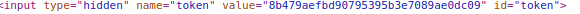
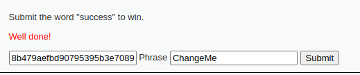
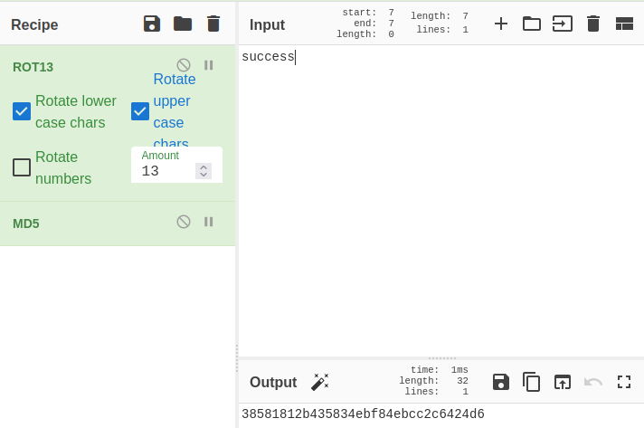
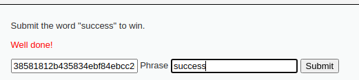

en esta pagina el objetivo es averiguar como poner la palabra succes y que este funcione, primero vemos el source.
al ver el source vemos como la unica funcion que es llamada es:
function generate_token() {
var phrase = document.getElementById("phrase").value;
document.getElementById("token").value = md5(rot13(phrase));
}
donde la frase que nosotros ponemos es encriptada en rot13 y luego en md5
por lo que tambien podemos ver como se genera un toquen de esa frase(la doble encriptacion)
por lo que buscamos donde este se muestra desde el inspeccionar y encontramos que este esta HIDDEN por lo que lo manipulamos para mostrarlo y poder cambiarlo.


luego entramos a cyberchef para encriptar dos veces la palabra success y quedaria asi:

38581812b435834ebf84ebcc2c6424d6

y listo!!!